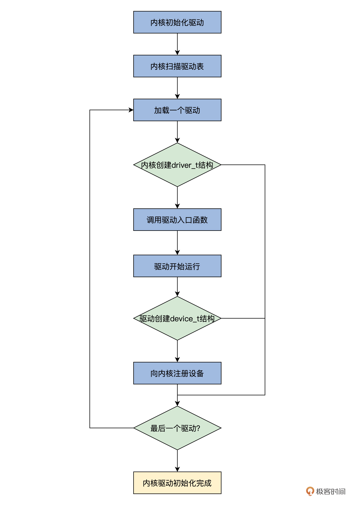

- 00 开篇词 为什么要学写一个操作系统？.md
- 00 编辑手记 升级认知，迭代自己的操作系统.md
- 01 程序的运行过程：从代码到机器运行.md
- 02 几行汇编几行C：实现一个最简单的内核.md
- 03 黑盒之中有什么：内核结构与设计.md
- 04 震撼的Linux全景图：业界成熟的内核架构长什么样？.md
- 05 CPU工作模式：执行程序的三种模式.md
- 06 虚幻与真实：程序中的地址如何转换？.md
- 07 Cache与内存：程序放在哪儿？.md
- 08 锁：并发操作中，解决数据同步的四种方法.md
- 09 瞧一瞧Linux：Linux的自旋锁和信号量如何实现？.md
- 10 设置工作模式与环境（上）：建立计算机.md
- 11 设置工作模式与环境（中）：建造二级引导器.md
- 12 设置工作模式与环境（下）：探查和收集信息.md
- 13 第一个C函数：如何实现板级初始化？.md
- 14 Linux初始化（上）：GRUB与vmlinuz的结构.md
- 15 Linux初始化（下）：从_start到第一个进程.md
- 16 划分土地（上）：如何划分与组织内存？.md
- 17 划分土地（中）：如何实现内存页面初始化？.md
- 18 划分土地（下）：如何实现内存页的分配与释放？.md
- 19 土地不能浪费：如何管理内存对象？.md
- 20 土地需求扩大与保障：如何表示虚拟内存？.md
- 21 土地需求扩大与保障：如何分配和释放虚拟内存？.md
- 22 瞧一瞧Linux：伙伴系统如何分配内存？.md
- 23 瞧一瞧Linux：SLAB如何分配内存？.md
- 24 活动的描述：到底什么是进程？.md
- 25 多个活动要安排（上）：多进程如何调度？.md
- 26 多个活动要安排（下）：如何实现进程的等待与唤醒机制？.md
- 27 瞧一瞧Linux：Linux如何实现进程与进程调度_.md
- 28 部门分类：如何表示设备类型与设备驱动？.md
- 29 部门建立：如何在内核中注册设备？.md
- 30 部门响应：设备如何处理内核I_O包？.md
- 31 瞧一瞧Linux：如何获取所有设备信息？.md
- 32 仓库结构：如何组织文件_.md
- 33 仓库划分：文件系统的格式化操作.md
- 34 仓库管理：如何实现文件的六大基本操作？.md
- 35 瞧一瞧Linux：虚拟文件系统如何管理文件？.md
- 36 从URL到网卡：如何全局观察网络数据流动？.md
- 37 从内核到应用：网络数据在内核中如何流转.md
- 38 从单排到团战：详解操作系统的宏观网络架构.md
- 39 瞧一瞧Linux：详解socket实现与网络编程接口.md
- 40 瞧一瞧Linux：详解socket的接口实现.md
- 41 服务接口：如何搭建沟通桥梁？.md
- 42 瞧一瞧Linux：如何实现系统API？.md
- 43 虚拟机内核：KVM是什么？.md
- 44 容器：如何理解容器的实现机制？.md
- 45 ARM新宠：苹果的M1芯片因何而快？.md
- 46 AArch64体系：ARM最新编程架构模型剖析.md
- LMOS来信：第二季课程带你“手撕”计算机基础.md
- 大咖助场 以无法为有法，以无限为有限.md
- 用户故事 yiyang：我的上机实验“爬坑指南”.md
- 用户故事 成为面向“知识库”的工程师.md
- 用户故事 技术人如何做选择，路才越走越宽？.md
- 用户故事 操作系统发烧友：看不懂？因为你没动手.md
- 用户故事 用好动态调试，助力课程学习.md
- 用户故事 艾同学：路虽远，行则将至.md
- 结束语 生活可以一地鸡毛，但操作系统却是心中的光.md
29 部门建立：如何在内核中注册设备？
你好，我是LMOS。
在上节课里，我们对设备进行了分类，建立了设备与驱动的数据结构，同时也规定了一个驱动程序应该提供哪些标准操作方法，供操作系统内核调用。这相当于设计了行政部门的规章制度，一个部门叫什么，应该干什么，这些就确定好了。
今天我们来继续探索部门的建立，也就是设备在内核中是如何注册的。我们先从全局了解一下设备的注册流程，然后了解怎么加载驱动，最后探索怎么让驱动建立一个设备，并在内核中注册。让我们正式开始今天的学习吧！
这节课配套代码，你可以从这里下载。
设备的注册流程
你是否想象过，你在电脑上插入一个USB鼠标时，操作系统会作出怎样的反应呢？
我来简单作个描述，这个过程可以分成这样五步。
1.操作系统会收到一个中断。- 2.USB总线驱动的中断处理程序会执行。- 3.调用操作系统内核相关的服务，查找USB鼠标对应的驱动程序。- 4.操作系统加载驱动程序。- 5.驱动程序开始执行，向操作系统内核注册一个鼠标设备。这就是一般操作系统加载驱动的粗略过程。对于安装在主板上的设备，操作系统会枚举设备信息，然后加载驱动程序，让驱动程序创建并注册相应的设备。当然，你还可以手动加载驱动程序。
为了简单起见，我们的Cosmos不会这样复杂，暂时也不支持设备热拨插功能。我们让Cosmos自动加载驱动，在驱动中向Cosmos注册相应的设备，这样就可以大大降低问题的复杂度，我们先从简单的做起嘛，相信你明白了原理之后，还可以自行迭代。
为了让你更清楚地了解这个过程，我为你画了一幅图，如下所示。

上图中，完整展示了Cosmos自动加载驱动的整个流程，Cosmos在初始化驱动时会扫描整个驱动表，然后加载表中每个驱动，分别调用各个驱动的入口函数，最后在驱动中建立设备并向内核注册。接下来，我们分别讨论这些流程的实现。
驱动程序表
为了简化问题，便于你理解，我们把驱动程序和内核链接到一起，省略了加载驱动程序的过程，因为加载程序不仅仅是把驱动程序放在内存中就可以了，还要进行程序链接相关的操作，这个操作极其复杂，我们先不在这里研究，感兴趣的话你可以自行拓展。
既然我们把内核和驱动程序链接在了一起，就需要有个机制让内核知道驱动程序的存在。这个机制就是驱动程序表，它可以这样设计。
//cosmos/kernel/krlglobal.c
KRL_DEFGLOB_VARIABLE(drventyexit_t,osdrvetytabl)[]={NULL};
drventyexit_t类型，在上一课中，我们已经了解过了。它就是一个函数指针类型，这里就是定义了一个函数指针数组，而这个函数指针数组中放的就是驱动程序的入口函数，而内核只需要扫描这个函数指针数组，就可以调用到每个驱动程序了。
有了这个函数指针数组，接着我们还需要写好这个驱动程序的初始化函数，代码如下。
void init_krldriver()
{
//遍历驱动程序表中的每个驱动程序入口函数
for (uint_t ei = 0; osdrvetytabl[ei] != NULL; ei++)
{ //运行一个驱动程序入口
if (krlrun_driverentry(osdrvetytabl[ei]) == DFCERRSTUS)
{
hal_sysdie("init driver err");
}
}
return;
}
void init_krl()
{
init_krlmm();
init_krldevice();
init_krldriver();
//……
return;
}
像上面代码这样，我们的初始化驱动的代码就写好了。init_krldriver函数主要的工作就是遍历驱动程序表中的每个驱动程序入口，并把它作为参数传给krlrun_driverentry函数。
有了init_krldriver函数，还要在init_krl函数中调用它，主要调用上述代码中的调用顺序，请注意，一定要先初始化设备表，然后才能初始化驱动程序，否则在驱动程序中建立的设备和驱动就无处安放了。
运行驱动程序
我们使用驱动程序表，虽然省略了加载驱动程序的步骤，但是驱动程序必须要运行，才能工作。接下来我们就详细看看运行驱动程序的全过程。
调用驱动程序入口函数
我们首先来解决怎么调用驱动程序入口函数。你要知道，我们直接调用驱动程序入口函数是不行的，要先给它准备一个重要的参数，也就是驱动描述符指针。
为了帮你进一步理解，我们来写一个函数描述内核加载驱动的过程，后面代码中drvp就是一个驱动描述符指针。
drvstus_t krlrun_driverentry(drventyexit_t drventry)
{
driver_t *drvp = new_driver_dsc();//建立driver_t实例变量
if (drvp == NULL)
{
return DFCERRSTUS;
}
if (drventry(drvp, 0, NULL) == DFCERRSTUS)//运行驱动程序入口函数
{
return DFCERRSTUS;
}
if (krldriver_add_system(drvp) == DFCERRSTUS)//把驱动程序加入系统
{
return DFCERRSTUS;
}
return DFCOKSTUS;
}
上述代码中，我们先调用了 一个new_driver_dsc函数，用来建立一个driver_t结构实例变量，这个函数我已经帮你写好了。
然后就是调用传递进来的函数指针，并且把drvp作为参数传送进去。接着再进入驱动程序中运行，最后，当驱动程序入口函数返回的时候，就会把这个驱动程序加入到我们Cosmos系统中了。
一个驱动程序入口函数的例子
一个驱动程序要能够被操作系统调用，产生实际作用，那么这个驱动程序入口函数，就至少有一套标准流程要走，否则只需要返回一个DFCOKSTUS就行了，DFCOKSTUS是个宏，表示成功的状态。
这个标准流程就是，首先要建立建立一个设备描述符，接着把驱动程序的功能函数设置到driver_t结构中的drv_dipfun数组中，并将设备挂载到驱动上，然后要向内核注册设备，最后驱动程序初始化自己的物理设备，安装中断回调函数。
光描述流程你还没有直观感受，所以下面我们来看一个驱动程序的实际例子，代码如下。
drvstus_t systick_entry(driver_t* drvp,uint_t val,void* p)
{
if(drvp==NULL) //drvp是内核传递进来的参数，不能为NULL
{
return DFCERRSTUS;
}
device_t* devp=new_device_dsc();//建立设备描述符结构的变量实例
if(devp==NULL)//不能失败
{
return DFCERRSTUS;
}
systick_set_device(devp,drvp);//驱动程序的功能函数设置到driver_t结构中的drv_dipfun数组中
if(krldev_add_driver(devp,drvp)==DFCERRSTUS)//将设备挂载到驱动中
{
if(del_device_dsc(devp)==DFCERRSTUS)//注意释放资源
{
return DFCERRSTUS;
}
return DFCERRSTUS;
}
if(krlnew_device(devp)==DFCERRSTUS)//向内核注册设备
{
if(del_device_dsc(devp)==DFCERRSTUS)//注意释放资源
{
return DFCERRSTUS;
}
return DFCERRSTUS;
}
//安装中断回调函数systick_handle
if(krlnew_devhandle(devp,systick_handle,20)==DFCERRSTUS)
{
return DFCERRSTUS; //注意释放资源
}
init_8254();//初始化物理设备
if(krlenable_intline(20)==DFCERRSTUS)
{
return DFCERRSTUS;
}
return DFCOKSTUS;
}
上述代码是一个真实设备驱动程序入口函数的标准流程，这是一个例子，不能运行，是一个驱动程序框架，这个例子告诉我们，操作系统内核要为驱动程序开发者提供哪些功能接口函数，这在很多通用操作系统上叫作驱动模型。
设备与驱动的联系
上面的例子只是演示流程的，我们并没有写好供驱动程序开发者使用的接口函数，我们这就来写好这些接口函数。
我们要写的第一个接口就是将设备挂载到驱动上，让设备和驱动产生联系，确保驱动能找到设备，设备能找到驱动。代码如下所示。
drvstus_t krldev_add_driver(device_t *devp, driver_t *drvp)
{
list_h_t *lst;
device_t *fdevp;
//遍历这个驱动上所有设备
list_for_each(lst, &drvp->drv_alldevlist)
{
fdevp = list_entry(lst, device_t, dev_indrvlst);
//比较设备ID有相同的则返回错误
if (krlcmp_devid(&devp->dev_id, &fdevp->dev_id) == TRUE)
{
return DFCERRSTUS;
}
}
//将设备挂载到驱动上
list_add(&devp->dev_indrvlst, &drvp->drv_alldevlist);
devp->dev_drv = drvp;//让设备中dev_drv字段指向管理自己的驱动
return DFCOKSTUS;
}
由于我们的设计一个驱动程序可以管理多个设备，所以在上述代码中，要遍历驱动设备链表中的所有设备，看看有没有设备ID冲突。如果没有就把这个设备载入这个驱动中，并把设备中的相关字段指向这个管理自己的驱动，这样设备和驱动就联系起来了。是不是很简单呢？
向内核注册设备
一个设备要想被内核感知，最终供用户使用，就要先向内核注册，这个注册过程应该由内核来实现并提供接口，在这个注册设备的过程中，内核会通过设备的类型和ID，把用来表示设备的device_t结构挂载到设备表中。下面我们来写好这部分代码，如下所示。
drvstus_t krlnew_device(device_t *devp)
{
device_t *findevp;
drvstus_t rets = DFCERRSTUS;
cpuflg_t cpufg;
list_h_t *lstp;
devtable_t *dtbp = &osdevtable;
uint_t devmty = devp->dev_id.dev_mtype;
if (devp->dev_drv == NULL)//没有驱动的设备不行
{
return DFCERRSTUS;
}
krlspinlock_cli(&dtbp->devt_lock, &cpufg);//加锁
//遍历设备类型链表上的所有设备
list_for_each(lstp, &dtbp->devt_devclsl[devmty].dtl_list)
{
findevp = list_entry(lstp, device_t, dev_intbllst);
//不能有设备ID相同的设备，如果有则出错
if (krlcmp_devid(&devp->dev_id, &findevp->dev_id) == TRUE)
{
rets = DFCERRSTUS;
goto return_step;
}
}
//先把设备加入设备表的全局设备链表
list_add(&devp->dev_intbllst, &dtbp->devt_devclsl[devmty].dtl_list);
//将设备加入对应设备类型的链表中
list_add(&devp->dev_list, &dtbp->devt_devlist);
dtbp->devt_devclsl[devmty].dtl_nr++;//设备计数加一
dtbp->devt_devnr++;//总的设备数加一
rets = DFCOKSTUS;
return_step:
krlspinunlock_sti(&dtbp->devt_lock, &cpufg);//解锁
return rets;
}
上述代码中，主要是检查在设备表中有没有设备ID冲突，如果没有的话就加入设备类型链表和全局设备链表中，最后对其计数器变量加一。完成了这些操作之后，我们在操作设备时，通过设备ID就可以找到对应的设备了。
安装中断回调函数
设备很多时候必须要和CPU进行通信，这是通过中断的形式进行的，例如，当硬盘的数据读取成功、当网卡又来了数据、或者定时器的时间已经过期，这时候这些设备就会发出中断信号，中断信号会被中断控制器接受，然后发送给CPU请求内核关注。
收到中断信号后，CPU就会开始处理中断，转而调用中断处理框架函数，最后会调用设备驱动程序提供的中断回调函数，对该设备发出的中断进行具体处理。
既然中断回调函数是驱动程序提供的，我们内核就要提供相应的接口用于安装中断回调函数，使得驱动程序开发者专注于设备本身，不用分心去了解内核的中断框架。
下面我们来实现这个安装中断回调函数的接口函数，代码如下所示。
//中断回调函数类型
typedef drvstus_t (*intflthandle_t)(uint_t ift_nr,void* device,void* sframe);
//安装中断回调函数接口
drvstus_t krlnew_devhandle(device_t *devp, intflthandle_t handle, uint_t phyiline)
{
//调用内核层中断框架接口函数
intserdsc_t *sdp = krladd_irqhandle(devp, handle, phyiline);
if (sdp == NULL)
{
return DFCERRSTUS;
}
cpuflg_t cpufg;
krlspinlock_cli(&devp->dev_lock, &cpufg);
//将中断服务描述符结构挂入这个设备结构中
list_add(&sdp->s_indevlst, &devp->dev_intserlst);
devp->dev_intlnenr++;
krlspinunlock_sti(&devp->dev_lock, &cpufg);
return DFCOKSTUS;
}
我来给你做个解读，上述代码中，krlnew_devhandle函数有三个参数，分别是安装中断回调函数的设备，驱动程序提供的中断回调函数，还有一个是设备在中断控制器中断线的号码。
krlnew_devhandle函数中一开始就会调用内核层的中断框架接口，你发现了么？这个接口还没写呢，所以我们马上就去写好它，但是我们不应该在krldevice.c文件中写，而是要在cosmos/kernel/目录下建立一个krlintupt.c文件，在这个文件模块中写，代码如下所示。
typedef struct s_INTSERDSC{
list_h_t s_list; //在中断异常描述符中的链表
list_h_t s_indevlst; //在设备描述描述符中的链表
u32_t s_flg; //标志
intfltdsc_t* s_intfltp; //指向中断异常描述符
void* s_device; //指向设备描述符
uint_t s_indx; //中断回调函数运行计数
intflthandle_t s_handle; //中断处理的回调函数指针
}intserdsc_t;
intserdsc_t *krladd_irqhandle(void *device, intflthandle_t handle, uint_t phyiline)
{ //根据设备中断线返回对应中断异常描述符
intfltdsc_t *intp = hal_retn_intfltdsc(phyiline);
if (intp == NULL)
{
return NULL;
}
intserdsc_t *serdscp = (intserdsc_t *)krlnew(sizeof(intserdsc_t));//建立一个intserdsc_t结构体实例变量
if (serdscp == NULL)
{
return NULL;
}
//初始化intserdsc_t结构体实例变量，并把设备指针和回调函数放入其中
intserdsc_t_init(serdscp, 0, intp, device, handle);
//把intserdsc_t结构体实例变量挂载到中断异常描述符结构中
if (hal_add_ihandle(intp, serdscp) == FALSE)
{
if (krldelete((adr_t)serdscp, sizeof(intserdsc_t)) == FALSE)
{
hal_sysdie("krladd_irqhandle ERR");
}
return NULL;
}
return serdscp;
}
上述代码中hal_add_ihandle、hal_retn_intfltdsc函数，我已经帮你写好了，如果你不明白其中原理，可以回到初始化中断那节课看看。
krladd_irqhandle函数，它的主要工作是创建了一个intserdsc_t结构，用来保存设备和其驱动程序提供的中断回调函数。同时，我想提醒你，通过intserdsc_t结构也让中断处理框架和设备驱动联系起来了。
这样一来，中断来了以后，后续的工作就能有序开展了。具体来说就是，中断处理框架既能找到对应的intserdsc_t结构，又能从intserdsc_t结构中得到中断回调函数和对应的设备描述符，从而调用中断回调函数，进行具体设备的中断处理。
驱动加入内核
当操作系统内核调用了驱动程序入口函数，驱动程序入口函数就会进行一系列操作，包括建立设备，安装中断回调函数等等，再之后就会返回到操作系统内核。
接下来，操作系统内核会根据返回状态，决定是否将该驱动程序加入到操作系统内核中。你可以这样理解，所谓将驱动程序加入到操作系统内核，无非就是将driver_t结构的实例变量挂载到设备表中。
下面我们就来写这个实现挂载功能的函数，如下所示。
drvstus_t krldriver_add_system(driver_t *drvp)
{
cpuflg_t cpufg;
devtable_t *dtbp = &osdevtable;//设备表
krlspinlock_cli(&dtbp->devt_lock, &cpufg);//加锁
list_add(&drvp->drv_list, &dtbp->devt_drvlist);//挂载
dtbp->devt_drvnr++;//增加驱动程序计数
krlspinunlock_sti(&dtbp->devt_lock, &cpufg);//解锁
return DFCOKSTUS;
}
配合代码中的注释，相信这里的思路你很容易就能领会。由于驱动程序不需要分门别类，所以我们只把它挂载到设备表中一个全局驱动程序链表上就行了，最后简单地增加一下驱动程序计数变量，用来表明有多少个驱动程序。
好了，现在我们操作系统内核向驱动程序开发人员提供的大部分功能接口就实现了。你自己也可以写驱动程序试试，看看是否只需要关注设备本身，而无须关注操作系统其它的部件。这就是我们Cosmos的驱动模型，虽然做了简化，但麻雀虽小，五脏俱全。
重点回顾
又到了课程结束的时候，今天我们通过这节课已经了解到，一个驱动程序开始是由内核加载运行，然后调用由内核提供的接口建立设备，最后向内核注册设备和驱动，完成驱动和内核的握手动作。
现在我们来梳理一下这节课的重点。
首先我们一开始从全局出发，了解了设备的建立流程。
然后为了简化内核加载驱动程序的复杂性，我们设计了一个驱动程序表。
最后，按照驱动程序的开发流程，我们给驱动程序开发者提供了一系列接口，它们是建立注册设备、设备加入驱动、安装中断回调函数，驱动加入到系统等，这些共同构成了一个最简化的驱动模型。
你可能会感觉我们虽然解决了建立设备的问题，可是怎么使用呢？这正是我们下一课要讨论的，敬请期待。
思考题
请你写出帮驱动程序开发者自动分配设备ID接口函数。
欢迎你在留言区和我交流互动。也欢迎你把这节课分享给自己的同事、朋友。
好，我是LMOS，我们下节课见！
© 2019 - 2023 Liangliang Lee. Powered by gin and hexo-theme-book.